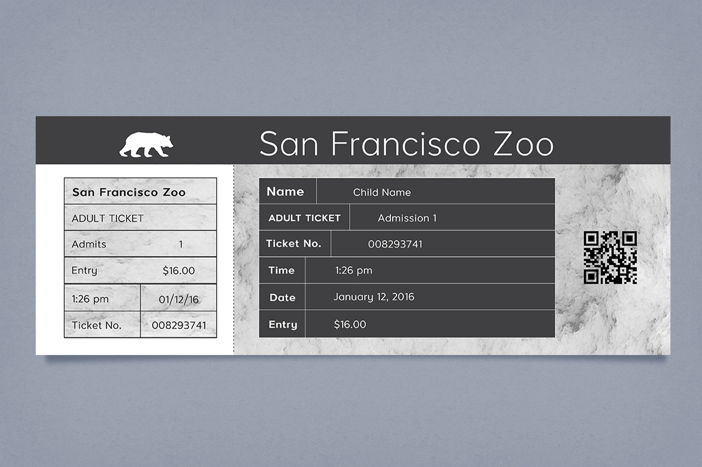

Tickets
Business Cards


For this project I wanted to refine the design of the San Francisco Zoo branding to be limited black and white colors. As this is a enviromentally conscious organization, I thought it would be in their best interest to have print materials be eco-friendly and at a low cost.